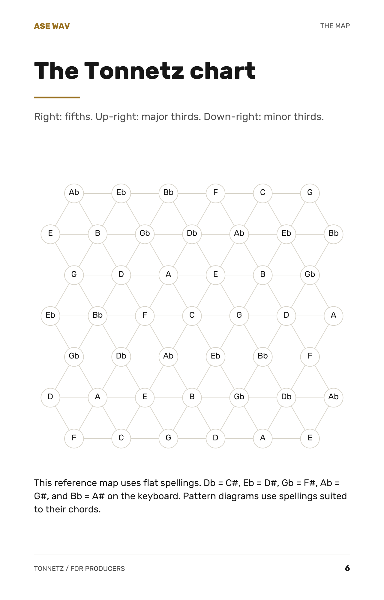
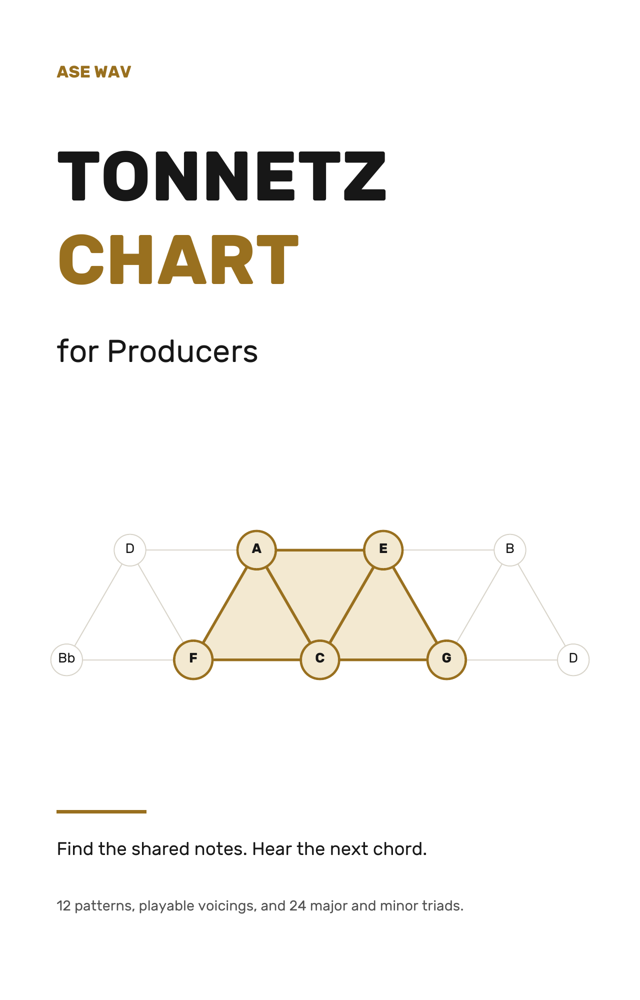
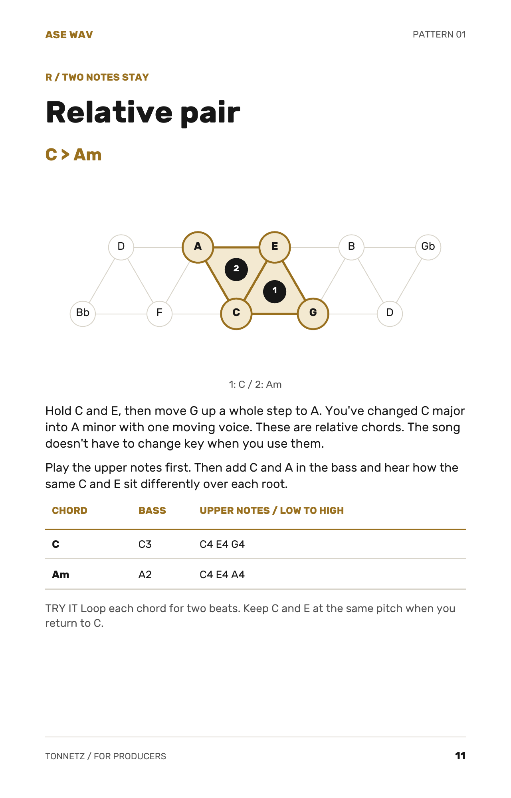
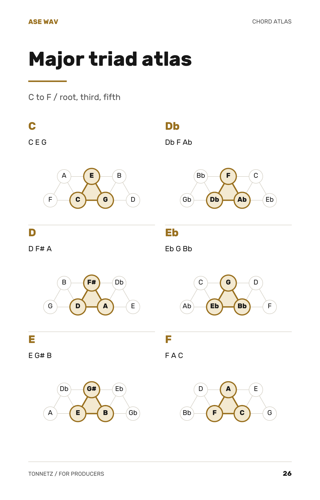

ASE WAV / Music theory for producers
Tonnetz Chart
for Producers
Find the shared notes. Hear the next chord.
A visual guide to smoother chord movement,
with patterns you can put to work in your next session.
37-page PDF ebook. Digital download.



Inside the ebook
From the map to your music.
Learn to read the chart, follow a chord change, and find a shape.
These are actual pages from the PDF.
{kind=link}
A reference map and reading instructions give you a place to start.
{kind=link}
Try the C major to A minor pattern, with written voicings to play.
{kind=link}

The full atlas covers all 24 major and minor triads.
What you get
A reference.
A practice tool.
A way forward.
For producers and beatmakers who want to understand shared-note transitions and make more intentional chord choices.
- The Tonnetz, explained
- A clean reference chart and beginner-friendly reading instructions.
- Four chord shape families
- Major, minor, diminished, and augmented shapes.
- 12 movement patterns
- Chord changes with written voicings you can practice.
- 24 major and minor triads
- A chord atlas plus parallel, relative, and leading-tone (P/R/L) lookup pages.
- Practice with a purpose
- Practice pages and a 15-minute session workflow.
A few details
Before you get started.
What is the Tonnetz chart?
The Tonnetz is a visual map of note relationships. Chord shapes show which notes two chords share, helping you explore how one chord can move into another. This guide connects the chart to written voicings and producer practice.
Do I need to know how to read the chart?
The ebook includes beginner-friendly reading instructions, a reference chart, and chord shapes before the movement patterns. You can work through the examples at your own pace.
Is this a printed book or a MIDI pack?
This is a 37-page digital PDF ebook. No physical item, MIDI files, or audio files are included. Modern R&B Chords for Producers is a separate ebook and MIDI bundle.
How much does the Tonnetz ebook cost?
ASE WAV Tonnetz Chart for Producers costs $9.99 USD. The purchase buttons take you to the ASE WAV Payhip checkout for the digital PDF.
ASE WAV Tonnetz Chart for Producers
Find your next chord.
37-page PDF ebook. Yours to explore, one pattern at a time.
Get the PDF - $9.99Digital download only. No physical item.